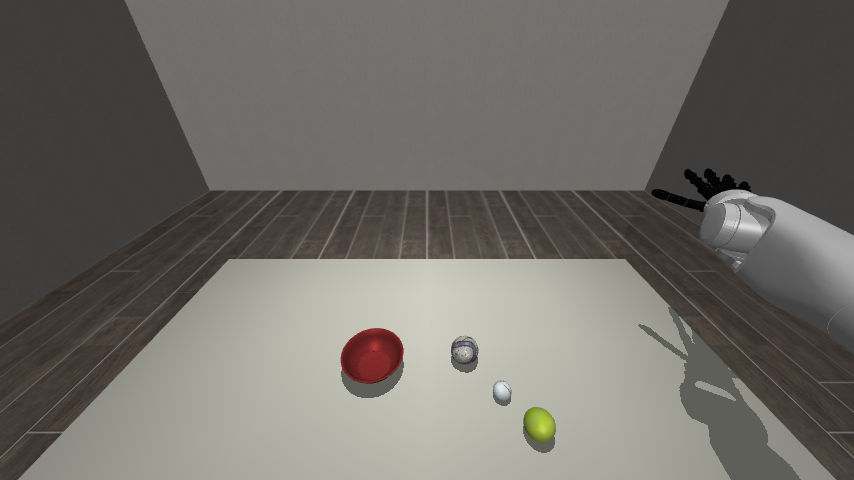
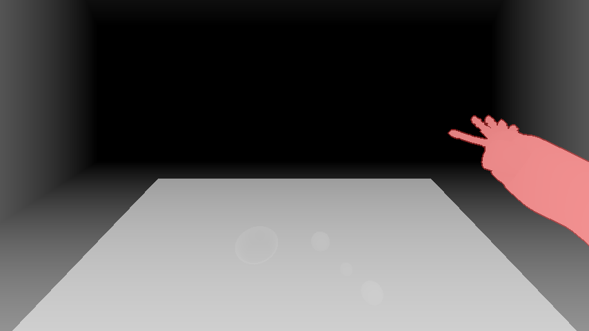
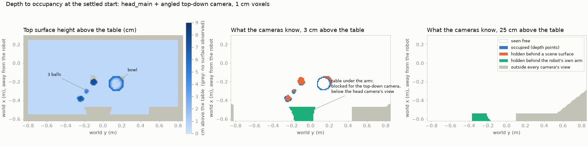
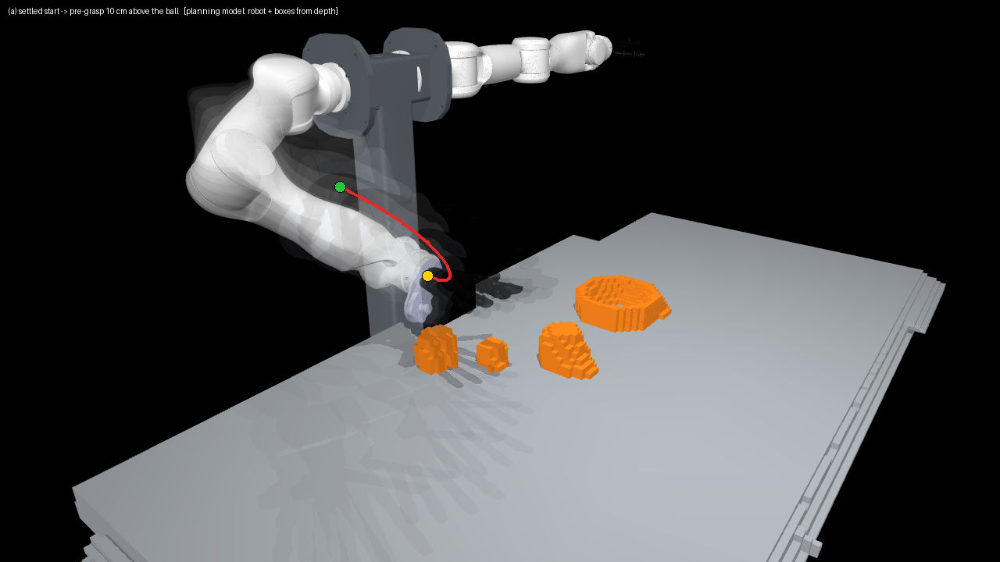
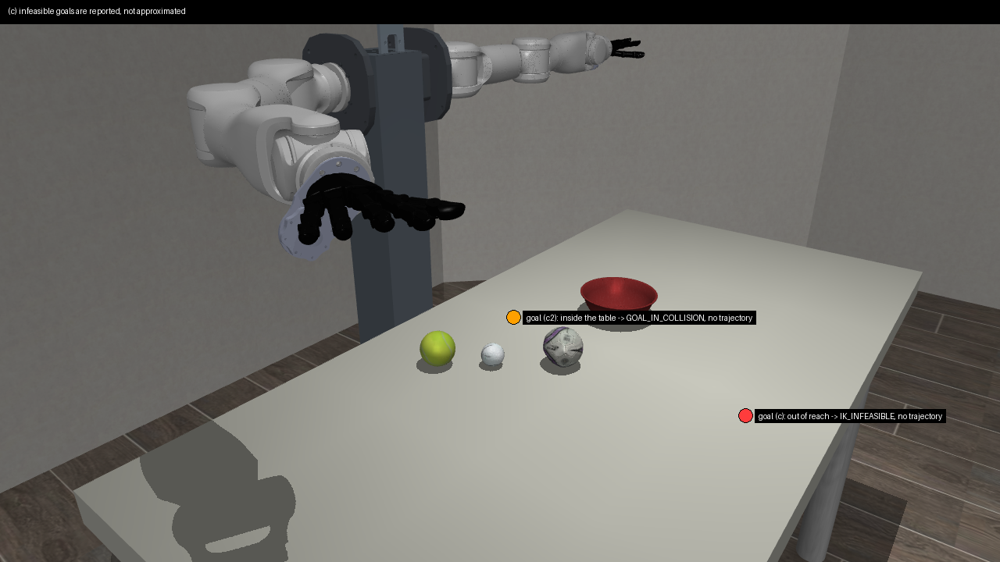
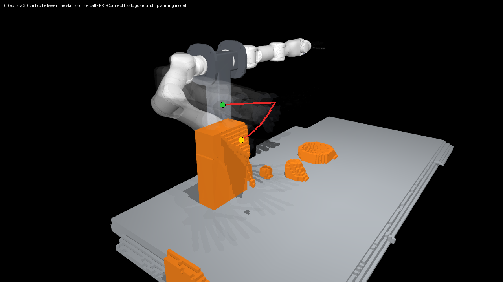

dashboard · generated 2026-11-24 03:45
Depth is rendered from the cameras head_main, topdown, back-projected to world points,
the robot's own pixels are removed, and the points fill a voxel grid of 10 mm
(92 × 170 × 81 cells). Occupied cells are merged into boxes in a
robot-only MuJoCo model; a collision query on it is one kinematics pass. Space behind a seen surface is treated as
occupied down to the table; space the robot's own arm hides is taken from the previous observation. Planning margin
10 mm (guaranteed clearance to the model 7.5 mm).
Rendering two cameras took 93 ms and filling the grid 137 ms.




| Case | Planned | Refusal | Planning, ms (median) | Collision queries | Waypoints | Joint path, rad | Duration, s | Peak wrist speed, m/s | Min. clearance to the depth model, mm | Min. clearance to the true scene, mm |
|---|---|---|---|---|---|---|---|---|---|---|
| (a) settled start → pre-grasp 10 cm above the ball | 10/10 | — | 41 | 629 | 2 | 1.85 | 2.21 | 0.30 | 39.6 | 47.2 |
| (b1) lift 15 cm: a vertical line, every sample solved by IK and checked | 10/10 | — | 13 | — | 31 | 0.66 | 1.02 | 0.30 | 11.9 | 17.1 |
| (b2) lifted pose → above the bowl centre | 10/10 | — | 46 | 390 | 2 | 1.10 | 1.20 | 0.24 | 48.0 | 49.7 |
| (b3) start → above the bowl in one plan | 10/10 | — | 183 | 4653 | 6 | 0.75 | 1.27 | 0.29 | 10.0 | 11.3 |
| (c) goal 0.99 m from the shoulder | 0/10 | IK_INFEASIBLE | 35 | — | — | — | — | — | — | — |
| (c2) goal reachable but inside the table | 0/10 | GOAL_IN_COLLISION | 28 | — | — | — | — | — | — | — |
| (d) a 30 cm box between start and goal | 10/10 | — | 336 | 8012 | 4 | 2.06 | 2.65 | 0.29 | 10.0 | 14.7 |
Clearances are the smallest over the 10 seeds; the true scene is used only for this check. A refusal returns no trajectory.
From beside the bowl to above its centre. The straight Cartesian line is solvable by IK at every sample, but it cuts the bowl rim, so it is refused. The planner returns either a lift followed by a move across the rim, or one plan that goes over it.

A 30 cm box was added to the true scene between the start and the ball. It is seen only through depth. The straight joint-space segment would go through it; the planner searches a way round.

A plan is only collision-free in execution if the arm stays on it. Driving the planned joint path through the co-simulation's present arm servo in CPU physics (no policy) gives the errors below; the servo is being corrected for this reason.
| Case | How the plan is followed (stock gains 700/40) → error |
|---|---|
| a_pregrasp | A track the planned joints directly: palm error mean 17.4 mm, max 29.4 mm, largest joint error 0.076 rad B per-tick IK on the plan's wrist path (today): palm error mean 15.3 mm, max 27.5 mm, largest joint error 0.243 rad C per-tick IK + the plan as posture target: palm error mean 17.3 mm, max 29.8 mm, largest joint error 0.079 rad A* track directly, per-joint critical damping: palm error mean 3.5 mm, max 5.8 mm, largest joint error 0.038 rad |
| b_direct | A track the planned joints directly: palm error mean 10.0 mm, max 12.1 mm, largest joint error 0.075 rad B per-tick IK on the plan's wrist path (today): palm error mean 10.3 mm, max 12.8 mm, largest joint error 0.579 rad C per-tick IK + the plan as posture target: palm error mean 10.0 mm, max 12.2 mm, largest joint error 0.077 rad A* track directly, per-joint critical damping: palm error mean 1.6 mm, max 3.8 mm, largest joint error 0.026 rad |
| b_lift_then_across | A track the planned joints directly: palm error mean 9.0 mm, max 12.9 mm, largest joint error 0.076 rad B per-tick IK on the plan's wrist path (today): palm error mean 9.3 mm, max 13.0 mm, largest joint error 0.548 rad C per-tick IK + the plan as posture target: palm error mean 9.1 mm, max 12.8 mm, largest joint error 0.077 rad A* track directly, per-joint critical damping: palm error mean 2.0 mm, max 6.5 mm, largest joint error 0.041 rad |
| d_box_in_the_way | A track the planned joints directly: palm error mean 14.1 mm, max 28.0 mm, largest joint error 0.075 rad B per-tick IK on the plan's wrist path (today): palm error mean 12.9 mm, max 27.5 mm, largest joint error 0.254 rad C per-tick IK + the plan as posture target: palm error mean 14.1 mm, max 27.9 mm, largest joint error 0.078 rad A* track directly, per-joint critical damping: palm error mean 3.5 mm, max 5.4 mm, largest joint error 0.035 rad |